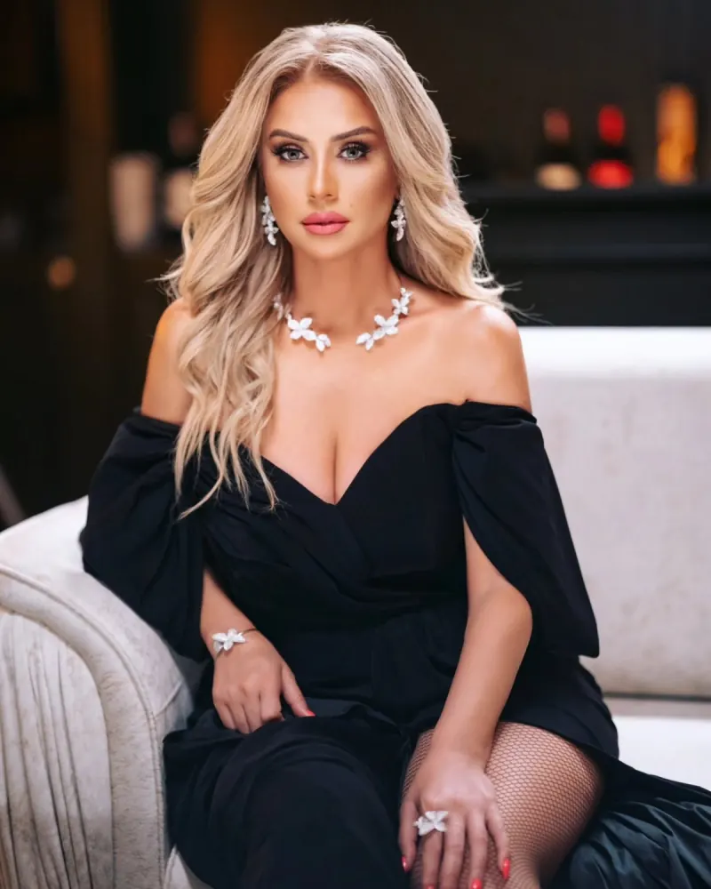

İki yetimin taleyi
Dram
Müğənni, rejissor, aktrisa və televiziya aparıcısı. Səhnədə iyirmi ildən artıq bir yol.
Yeni sinql Zəng elə — 2026, Lotus Music
Akkordeonla başlayan, fortepiano və vokalla davam edən, rejissor kürsüsündə yetkinləşən bir yaradıcılıq yolu.

Roza Zərgərli 1979-cu il martın 27-də hərbçi ailəsində anadan olub. Musiqiyə uşaqlıqdan bağlanıb: ilk aləti akkordeon olub, sonra fortepiano sinfinə keçib və yeddiillik musiqi məktəbini dörd ilə bitirib.
Musiqi Texnikumunu və Musiqi Akademiyasının vokal ixtisasını fərqlənmə diplomu ilə başa vurub. 2007-ci ildə Azərbaycan Dövlət Mədəniyyət və İncəsənət Universitetini rejissorluq üzrə bitirib, 2015-ci ildə isə “Rejissor sənətinin tarixi və nəzəriyyəsi” ixtisası üzrə magistr diplomu alıb.
Estrada səhnəsi ilə yanaşı, Mingəçevir Dövlət Dram Teatrında quruluşçu rejissor kimi çalışıb, bir sıra tamaşaların baş rejissoru olub və onların bir çoxunda aktrisa kimi çıxış edib. Beynəlxalq musiqi festivallarında Azərbaycanı münsif kimi təmsil edib. 2018-ci ildə “Maşın” şousunun 16-cı mövsümünün qalibi olub.
Sinqllar, duetlər və kliplər — Lotus Music leyblı ilə Spotify, Apple Music və rəsmi YouTube kanalında.
Pleyer bu önizləmədə göstərilmir. Spotify ↗
Pleyer bu önizləmədə göstərilmir. Apple Music ↗
2026–2027 canlı turnesi. Biletlər rəsmi satış platformalarından alınır. Rusiya üzrə konsert direktoru: Ruslan.
Növbəti konsertə qalıb — Samara
KRC Zvezda · başlama 19:00
Tinkoff Hall · başlama 19:00
DK Lensoveta · başlama 19:00
Kuban Kazak Xoru Konsert Zalı · başlama 19:00
DK QAZ · başlama 19:00
Korston · başlama 19:00
KZ Moskva · başlama 19:00
Mingəçevir Dövlət Dram Teatrında quruluşçu rejissor kimi hazırladığı tamaşalar — bir çoxunda özü də səhnəyə çıxıb.
Dram
M.F. Axundzadə · komediya
C. Cabbarlı · dram
C. Cabbarlı · dram
Dram
C. Məmmədquluzadə · tragikomediya
Peşəkar səhnə fəaliyyətinin başlanğıcı
Rejissorluq ixtisası — fərqlənmə diplomu
Mingəçevir Dövlət Dram Teatrı, quruluşçu rejissor
“Maşın” şousunun 16-cı mövsümünün qalibi
Rusiya üzrə böyük turne: Samaradan Moskvaya
Səhnə, fotosessiyalar, mükafatlar və kulis anları.
Yeni buraxılışlar, turne və mediada Roza Zərgərli.
Yeni sinqlın rəsmi klipi YouTube kanalında yayımlandı; mahnı bütün rəqəmsal platformalarda.
YouTube · @RozaZergerliTVQroznıdakı konsert böyük marağa səbəb oldu; tədbirdən sonra respublika rəhbərliyi ilə görüş keçirildi.
Teleqraf.azSamara, Ufa, Sankt-Peterburq, Krasnodar, Nijni Novqorod, Kazan və Moskva — biletlər satışdadır.
rozazergerli.ruAzərbaycan, Rusiya və Türkiyə auditoriyasına çıxış — musiqi, səhnə və sosial media vasitəsilə.
Əsas auditoriya 25–45 yaş, qadınlar üstünlük təşkil edir. Coğrafiya: Azərbaycan, Rusiya, Türkiyə və Avropadakı diaspora.
Konsert, toy və korporativ tədbirlər, televiziya layihələri və media sorğuları üçün menecerlə əlaqə saxlayın. Leybl: Lotus Music.
Sorğunuz qəbul olundu. Menecer bir iş günü ərzində sizinlə əlaqə saxlayacaq.